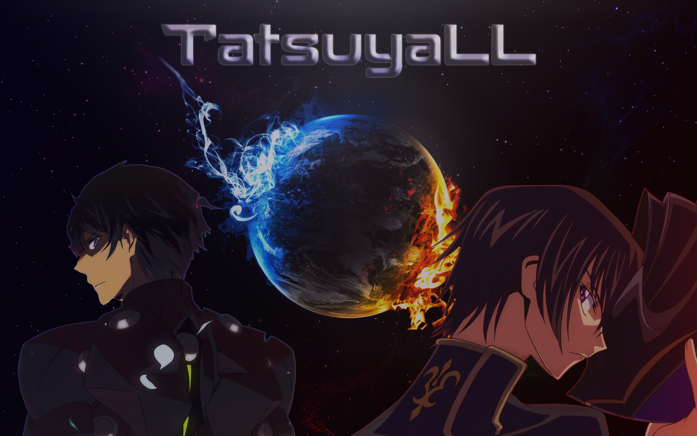

The man who got lost in oblivion, but found his way back and rose like a Phoenix.

The character on the left side is Tatsuya Shiba and on the other side is Lelouch Lamperouge.
Here's a timeline on his gaming journey:
Passion in Gaming
He grows up surrounded by friends and relatives who loves playing games. As a kid full of
curiosity growing up, he tried playing as well and eventually ended up loving it.
Little did he know that by playing games made him realize that he is a competitive person.
Alloting more time to games in order to become better than everyone he knows.
2005 - 2007: Console Games
Due to having high grades, his parents gave him different types of game consoles as a reward.
This consists of Playstation 1 and 2, and Playstation Portable. He got this idea from his
relatives who play a lot of video games with these consoles. His game preferences are leaning
toward grindy RPG games such as Rancher, Final Fantasy franchise, Gods Eater, Monster Hunter, etc.
One of his friend introduced to him Defense of the Ancient which is a Multiplayer Online Battle
Arena game that can be played in PC. At first his performance was poor so he ends up losing a lot of times.
This brought spark to his hidden competitive side making him play the game seriously and spend most of his
free time playing it.
After a couple of months he started to see positive results. He even became better
than his friend. He develops a passion to the game reaching high ranks and join some local tournaments. He
even played different games with the same genre such as League of Legends and Heroes of Newerth.
Defense of the Ancient 1Heroes of NewerthLeague of LegendsDefense of the Ancient 2
2015 - 2021: Mobile Games
Entering his college years, he and pc game buddies went their separate ways. No more friends to play with,
he shifted to mobile games such as Mobile Legends because it was the trending game under the MOBA genre. He
played a couple of similar mobile games like Heroes Evolved, League of Legends: Wild Rift
and Call of Duty Mobile. He became successful and ended up becoming a professional player in one of them.
Despite winning some of the tournaments, the competition in the game went downhill. In addition to that,
pandemic took place to further hinder him in his professional career in gaming. This led him to lose his
passion and drive for a career in gaming.
Mobile Legends: Bang BangHeroes EvolvedLeague of Legends: Wild RiftCall of Duty Mobile
Additional info will be provided here once he proceeds to create his very own portfolio.